Domination
Drużyna przytrzymuje wejście urządzenia przez kilka sekund, żeby je przejąć, i zdobywa punkty co takt, dopóki je utrzymuje. Druga drużyna może je w każdej chwili odbić.
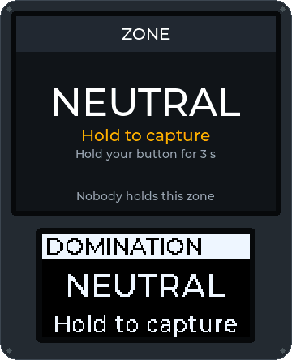
Tę stronę przetłumaczył model AI i nie została jeszcze sprawdzona. Grasz po polsku? Pomóż nam ją sprawdzić: docs/translations w repozytorium na GitHubie.
Serwer testowy i jego demo na żywo (tests.atalaia-project.link i demo.atalaia-project.link) są wyłączone mniej więcej do 3 grudnia 2026 r., na czas podróży opiekuna projektu. Ta strona, kod i wydania na GitHubie pozostają dostępne.
Tryby reagują na intencję („drużyna przejmuje to urządzenie”), a nie na sprzęt, więc ten sam skrypt działa na Field Boksie, skrzynce z klawiaturą albo telefonie z Androidem. Czternaście trybów, jeden modyfikator i Medic Kit są już napisane i przetestowane w oprogramowaniu; żaden nie działał jeszcze na prawdziwym terenie gry.
Każdą animację poniżej rysuje kod firmware'u samego Field Boksa, to nie makiety: duży ekran u góry, mały OLED pod nim, w trakcie gry w danym trybie. Przycisk pod obrazkiem ją wstrzymuje.
Drużyna przytrzymuje wejście urządzenia przez kilka sekund, żeby je przejąć, i zdobywa punkty co takt, dopóki je utrzymuje. Druga drużyna może je w każdej chwili odbić.

Atakujący uzbrajają bombę, a potem jej bronią; obrońcy muszą ją rozbroić, zanim skończy się zapalnik. Wybuch kończy grę zwycięstwem atakujących. Uzbrajanie i rozbrajanie odbywa się przytrzymaniem przycisku albo każda drużyna dostaje własny kod na klawiaturze.
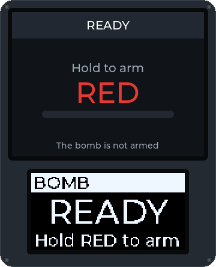
Bomba w rundach, aż skończy się czas gry. Atakujący uzbrajają bombę, obrońcy ją rozbrajają. Wybuch to punkt dla atakujących, rozbrojenie to punkt dla obrońców; potem skrzynka odpoczywa i zaczyna się kolejna runda. Wygrywa drużyna z większą liczbą punktów.
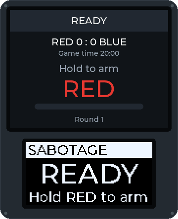
Drużyny przejmują skrzynki jak w Domination, ale drużyna zdobywa punkty tylko wtedy, gdy trzyma wszystkie skrzynki naraz. Utrata jednej zatrzymuje naliczanie punktów.
Obrońcy zaczynają ze wszystkimi strefami. Gdy zostaje im ostatnia, rusza odliczanie do porażki, które trwa, dopóki nie odbiją innej; gdy dobiegnie końca, wygrywają atakujący.
Gracze noszą podpisane tagi NFC. Drużyna skanuje zebrane tagi na stacji: tag przeciwnika potwierdza trafienie, tag kolegi z drużyny je anuluje. Podrobione tagi są odrzucane.
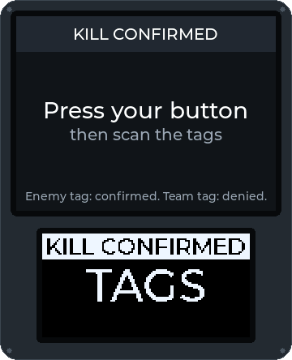
Punkt respawnu liczy życia na drużynę lub na gracza, z czasem odnowienia między respawnami. Gdy drużynie skończą się życia, odpada z gry.
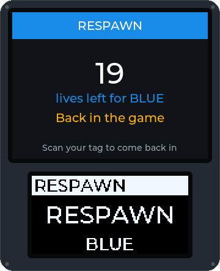
Gracze robią check-in w punkcie kontrolnym swoim tagiem. Skrzynka liczy graczy każdej drużyny i może przyznawać punkty za każdy check-in.
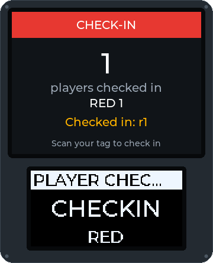
Obok dowolnego trybu: trafiony gracz skanuje swój tag i przytrzymuje przycisk przez ustalony czas, żeby zostać uleczonym. Apteczka pokazuje, ile leczeń jej zostało; każdy gracz ma ograniczoną liczbę leczeń na grę przy każdej apteczce, GM uzupełnia apteczkę z konsoli, a każde leczenie widać w logu GM i w widoku graczy.
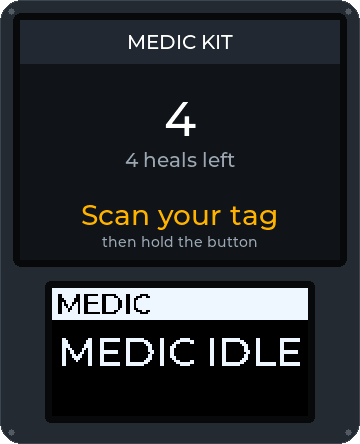
Drużyny przejmują skrzynkę master i jej satelity. Punkty zdobywa tylko master, a każda satelita, którą trzyma także jego posiadacz, podnosi jego punkty; gdy master zmienia właściciela, wszystkie satelity wracają do stanu neutralnego. Napisany i przetestowany w oprogramowaniu, a teraz także rozegrany testowo na prawdziwych skrzynkach (zobacz klip poniżej).
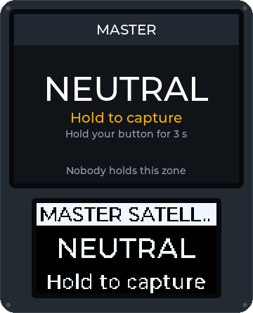
Tarcza zapala się na kilka sekund w kolorze losowej drużyny, a trafienie, gdy świeci, daje punkt tej drużynie. Gra jest napisana i przetestowana w oprogramowaniu, od początku do końca z symulowaną tarczą; potrzebny moduł tarczy (płyta z czujnikiem trafień podłączana do skrzynki, której własne światła pokazują okno) ma instrukcję budowy i firmware, ale żadnego jeszcze nie zbudowano ani nie wypróbowano na prawdziwej płycie.
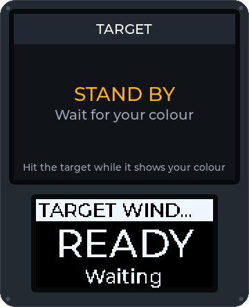
Terminal zadaje zagadkę na swojej klawiaturze: złam kod na podstawie tego, ile cyfr jest na właściwym miejscu, przetnij kable we właściwej kolejności albo powtórz sekwencję. Zła odpowiedź blokuje go na chwilę. Rozwiązanie może ujawnić kod do innego celu, dać punkty i przejąć terminal, dopóki inna drużyna go nie odhakuje. Napisany i przetestowany w oprogramowaniu, jeszcze nie rozegrany na telefonie w terenie.
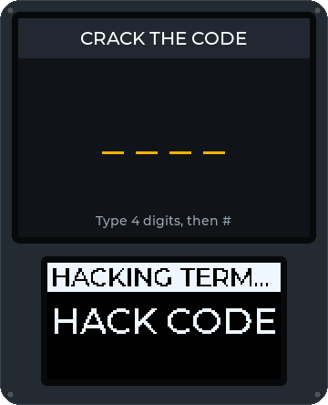
Jedna drużyna eskortuje swojego VIP-a, gracza udostępniającego pozycję z aplikacji, albo payload, telefon z GPS, do strefy ewakuacji; pozostali próbują ich zatrzymać. Skrzynki punktów kontrolnych po drodze dają punkty, dopóki drużyna je trzyma. Pozycje zostają na kontrolerze terenu i telefonie; na zewnątrz wychodzi tylko „ewakuowano”. Napisany i przetestowany w oprogramowaniu, jeszcze nie rozegrany z prawdziwym GPS.
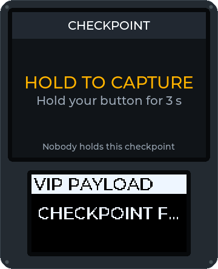
Drużyny przejmują skrzynki-fabryki, które produkują pieniądze, dopóki je trzymają. Gracze zbierają je, skanując swój tag w fabryce swojej drużyny, przenoszą przez teren gry i wpłacają w skrzynce-banku za punkty; kontroler terenu pamięta, ile niesie każdy gracz, więc pieniądze można zebrać w jednej skrzynce i wpłacić w innej. Gracz uleczony przy apteczce traci to, co niesie, a pierwsza drużyna, która wpłaci docelową kwotę, może wygrać. Napisany i przetestowany w oprogramowaniu, jeszcze nie rozegrany na prawdziwych skrzynkach.
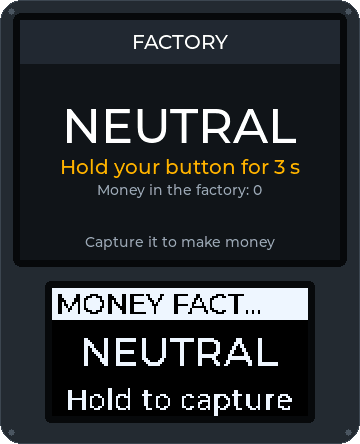
Kilka skrzynek, ale naraz można przejąć tylko jedną, a obie drużyny wiedzą którą. Drużyna trzymająca aktywną skrzynkę zdobywa punkty za każdą pełną minutę; gdy drużyna utrzyma ją wystarczająco długo, skrzynka zostaje zaliczona dla tej drużyny i zablokowana, a kolejna skrzynka w kolejności jest ogłaszana obu drużynom. Kolejność to lista GM, numery skrzynek albo losowa; gra kończy się, gdy zostanie zaliczona ostatnia skrzynka albo gdy drużyna osiągnie docelowy wynik. Napisany i przetestowany w oprogramowaniu, jeszcze nie rozegrany na prawdziwych skrzynkach.
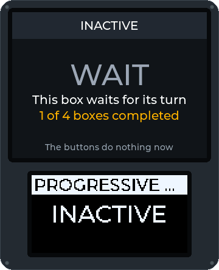
Działa obok dowolnego trybu na tej samej skrzynce: kody z klawiatury dają punkty, podpowiedzi lub odblokowania, a GM widzi, kto użył każdego kodu i która drużyna trzymała wtedy skrzynkę.
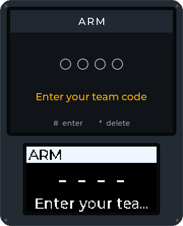
Capture the flag, własny tryb twojego klubu… Tryby to krótkie skrypty. Zaproponuj swój za pomocą szablonu pomysłu na tryb gry albo udostępnij gotowy jako podpisany pakiet w rejestrze trybów.
Osiem zrzutów z prawdziwego firmware'u Field Boksa (ESP32, LVGL 9.2, 320 × 240 TFT) działającego w emulatorze Wokwi, od PIN-u organizatora gry do rozbrojenia bomby. Interfejs skrzynki jest po angielsku. Firmware działa już na prawdziwym Heltecu V4.3; te zrzuty pochodzą z emulatora. Stuknij lub kliknij zrzut, żeby go powiększyć.
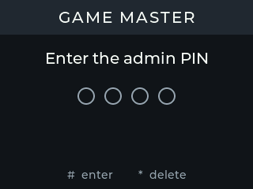
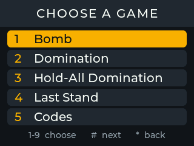
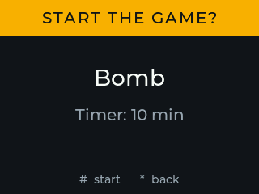
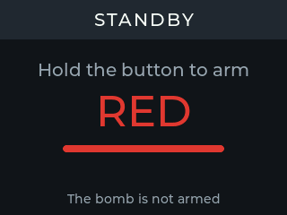
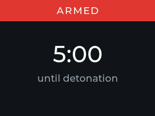
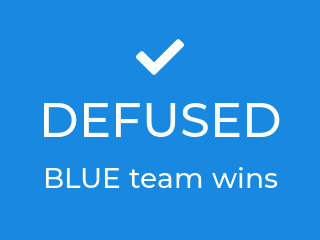
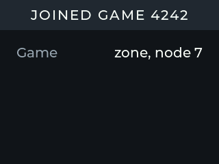
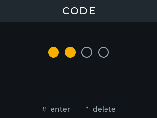
Instrukcja budowy zawiera pełny schemat okablowania i poradnik pierwszego wgrania firmware'u na Heltec WiFi LoRa 32 V4.